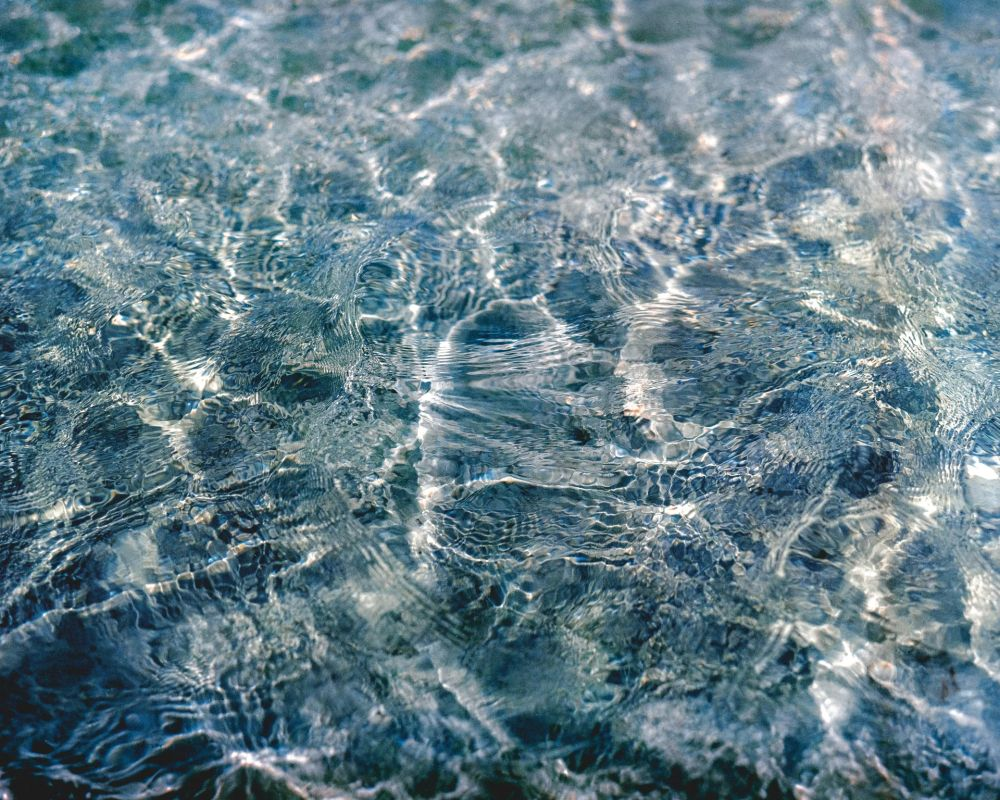
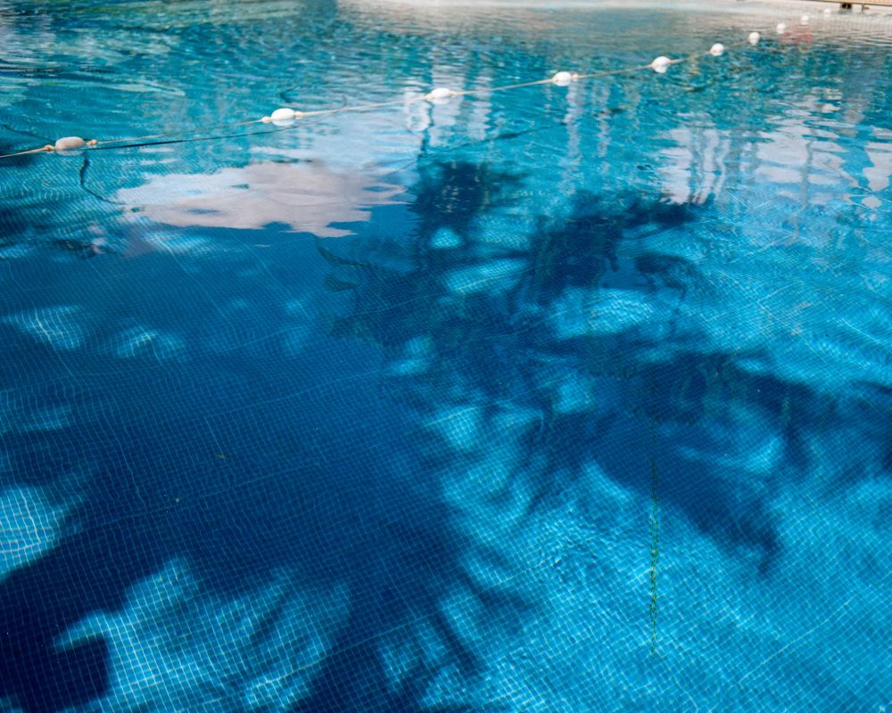
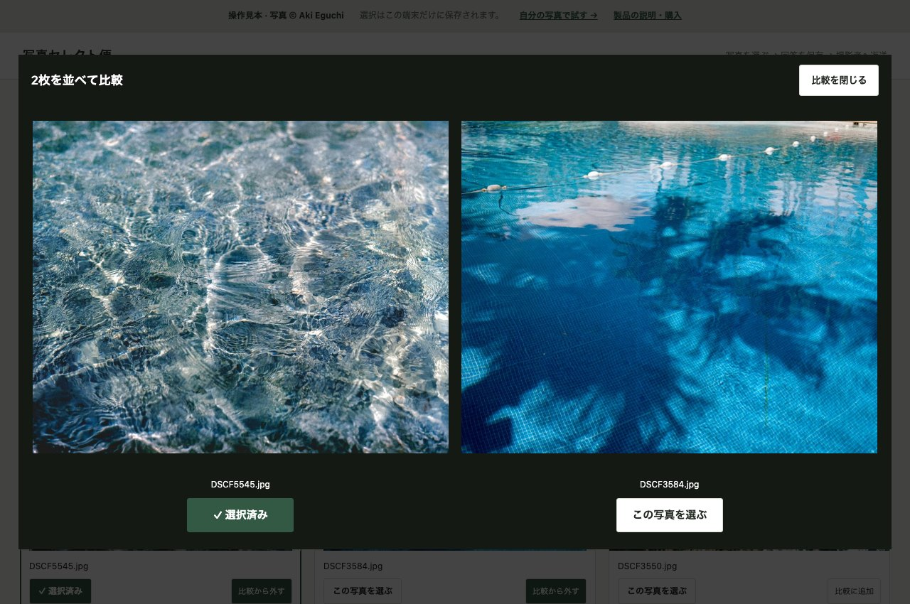

写真を撮る人と、選ぶ人のために。
写真のセレクトを、
クラウドに預けずに。
依頼主が選んだ写真と、仕上げの希望。
番号を打ち直してもらわず、元のファイル名で受け取れます。
登録不要の操作見本 / 自分の写真は12枚まで無料
製品版 ¥3,980・買い切り / PCブラウザ用


選んだ理由も、その写真のコメントに。
実際の画面で、選び方が分かります。
迷った2枚を比べて、
その場で選ぶ。

写真を大きく見て決める
2枚を並べて比較。1枚ずつ見るときは、矢印キーで移動し、スペースキーで選択できます。
希望を写真ごとに残す
「少し明るく」「このカットを表紙に」。拡大したままコメントを書けます。
選定後の作業に戻りやすい
回答を読み込むと、選んだ写真の元ファイル名とコメントが一覧に。CSVにも書き出せます。
ファイルをひと往復。
渡したファイルが、自分の控えにも。
候補をまとめて渡す
JPEGなどを追加し、説明と枚数を指定。1つの閲覧HTMLを保存して、合意した共有先で渡します。透かし文字も追加できます。
選んで、回答を返す
PCでファイルを開き、写真とコメントを選定。回答ファイルを保存して返送します。閲覧用のアカウントは不要です。
送ったHTMLで再開する
手元に残した閲覧HTMLをソフトで開き、回答を読み込みます。別に案件JSONを保存しておく必要はありません。
回答の保存だけでは送信されません。写真入りのHTMLと、写真を含まない回答JSONを、普段の連絡方法で受け渡す仕組みです。
こんなやり取りに。
PCで選定する、
小さなチームに。
撮影者と編集者で掲載候補を決める。デザイナーに使うカットを選んでもらう。既にファイルの共有方法が決まっている相手とのやり取りを想定しています。
- 写真を新しいクラウドへ預けたくない制作元へのアップロードも、AIへの写真送信もありません。
- 選定のためだけに月額契約を増やしたくない購入したソフトを、案件数の制限なく使えます。
- 原本とコメントの対応を残したい元のファイル名・選択・コメントをCSVにまとめられます。
購入前に、相手の環境も確認
- PCでHTMLをダウンロードして開ける
- 回答ファイルを保存・返送できる
- 共有リンクや自動集計は必要ない
スマートフォンだけで選びたい相手や、リンク1つでリアルタイムに集計したい案件には、オンラインギャラリーが向いています。
メールでHTMLを添付できない場合はZIPにまとめてください。社内規則でHTMLを開けない場合は、このツールは使えません。
12枚で、相手との往復まで。
まずは無料版で確かめる。
無料版も、比較・透かし・コメント・回答の取り込みまで使えます。ご自身と相手のPCで一度やり取りしてから、製品版をご検討ください。
オフライン用の無料版をダウンロード解凍してHTMLを開くだけ。インストール不要です。
写真セレクト便 製品版
¥3,980 税込・買い切り
| 写真の枚数 | 1案件300枚まで / 案件数の制限なし |
|---|---|
| 使える機能 | 2枚比較・コメント・透かし・CSV出力 |
| 含まれるもの | ソフト本体・使い方・依頼主への案内文 |
| ライセンス | 1人の業務・個人利用 作った閲覧ファイルは依頼主に配布可 |
| 対応画像 | JPEG・PNG・WebP / 1枚30MBまで |
| 利用環境 | PCのChrome・Edge・Safariを想定 購入前に無料版で動作を確認 |
支払い確認後、BOOTHの購入履歴からZIPを取得できます。購入にはBOOTHへのログインが必要です。ソフト自体は登録不要。収録ソフトの再配布・転売はできません。
迷ったときの選び方。
共有リンクか、ファイルの往復か。
| 選びたい条件 | オンラインギャラリー | 写真セレクト便 |
|---|---|---|
| 相手への渡し方 | 共有リンク | 写真入りHTMLファイル |
| 写真を置く場所 | サービスのクラウド | 撮影者と依頼主の端末 |
| 回答の受け取り | サービス上で確認 | 回答ファイルを受け取る |
| 向いている相手 | リンクだけで見たい人 | PCでファイルを扱える人 |
オンラインサービスにも無料プランがあります。月額料金だけでなく、相手が迷わず使えるかでお選びください。参考：Pixieset、picdrop。サービスごとの仕様・料金は公式案内をご確認ください。
購入前によくある質問
無料版と製品版は何が違いますか？
1案件で扱える候補が12枚から300枚になります。比較・コメント・透かし・回答の読み込みは無料版でも使えます。どちらも案件数・利用期間に制限はありません。
写真や回答は外部に送信されますか？
ソフトから写真・案件・回答を外部サーバーへ送信する機能はありません。渡す閲覧HTML自体に確認用の写真が入るため、共有先の管理は必要です。この紹介ページのアクセス計測と、ソフト内の処理は別です。
スマートフォンや共有リンクで使えますか？
この商品はPCでファイルを受け渡す方法を対象としています。スマートフォンだけの運用、写真のホスティング、自動集計、共有リンク発行には対応していません。
RAW、HEIC、色校正にも使えますか？
JPEG・PNG・WebPに対応します。RAW・HEICはJPEGを書き出してから使ってください。確認用画像を縮小するため、厳密な色校正や納品には使わず、選定後は原本から仕上げてください。
パスワード、期限、コピー防止はありますか？
ありません。透かし文字を焼き込めますが、コピーや転送を完全に防ぐものではありません。必要な機密性を満たす共有手段を別途選んでください。
以前に作った案件も開けますか？
v1.0の案件JSON・回答JSONは引き続き使えます。閲覧HTMLからの再開はv1.1で作ったファイルに対応します。旧版の閲覧HTMLだけでは再開できないため、案件JSONを保管してください。
困ったときはどこへ連絡すればよいですか？
BOOTHのメッセージから、OS・ブラウザ・操作手順をお知らせください。写真や顧客の個人情報を送る必要はありません。購入前の動作確認には無料版をご利用ください。